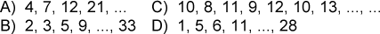

Find the missing numbers:

Remember tasks 513, 514, 528.
a$)$ 71; To get the next number, multiply the previous by 2 and subtract the sequence number of the previous number.
b$)$ 17; To get the next number, multiply the previous by 2 and subtract 1.
c$)$ 11 and 14; On even places there is a sequence of 10, 11, 12, 13, ..., and at odd places - a sequence of 8, 9, 10, ....
d$)$ 17; Each next number is equal to the sum of the two previous ones.
a$)$ 71; b$)$ 17; c$)$ 11 and 14; d$)$ 17